![What's in it: Sesame bun — Anthropic, OpenAI, Ollama, LangChain, Vertesia; Patty #1 — RMM, EDR, PSA, Cloud, Rollouts & migrations, Team enablement; Pickles — EDR, Incident response, SecOps; Lettuce — PowerShell, TypeScript, Python, Go, Rust, C# / .NET; Onions — Traefik, Envoy, Nginx, UniFi, Docker, Grafana, Cloudflare, CrowdSec; Special sauce — Model Context Protocol, REST APIs, Webhooks; Club bun — Service delivery, Team leadership, KPIs & escalations; Patty #2 — Full-stack apps, API modules, MCP servers, Integrations; Cheese — RMM automation, GitHub Actions, Azure, AWS; Heel — 14+ years in MSP, Help desk to ops, Project management](./stack-dark.svg)











![What's in it: Sesame bun — Anthropic, OpenAI, Ollama, LangChain, Vertesia; Patty #1 — RMM, EDR, PSA, Cloud, Rollouts & migrations, Team enablement; Pickles — EDR, Incident response, SecOps; Lettuce — PowerShell, TypeScript, Python, Go, Rust, C# / .NET; Onions — Traefik, Envoy, Nginx, UniFi, Docker, Grafana, Cloudflare, CrowdSec; Special sauce — Model Context Protocol, REST APIs, Webhooks; Club bun — Service delivery, Team leadership, KPIs & escalations; Patty #2 — Full-stack apps, API modules, MCP servers, Integrations; Cheese — RMM automation, GitHub Actions, Azure, AWS; Heel — 14+ years in MSP, Help desk to ops, Project management](./stack-light.svg)
![What's in it: Sesame bun — Anthropic, OpenAI, Ollama, LangChain, Vertesia; Patty #1 — RMM, EDR, PSA, Cloud, Rollouts & migrations, Team enablement; Pickles — EDR, Incident response, SecOps; Lettuce — PowerShell, TypeScript, Python, Go, Rust, C# / .NET; Onions — Traefik, Envoy, Nginx, UniFi, Docker, Grafana, Cloudflare, CrowdSec; Special sauce — Model Context Protocol, REST APIs, Webhooks; Club bun — Service delivery, Team leadership, KPIs & escalations; Patty #2 — Full-stack apps, API modules, MCP servers, Integrations; Cheese — RMM automation, GitHub Actions, Azure, AWS; Heel — 14+ years in MSP, Help desk to ops, Project management](./stack-m-dark.svg)
![What's in it: Sesame bun — Anthropic, OpenAI, Ollama, LangChain, Vertesia; Patty #1 — RMM, EDR, PSA, Cloud, Rollouts & migrations, Team enablement; Pickles — EDR, Incident response, SecOps; Lettuce — PowerShell, TypeScript, Python, Go, Rust, C# / .NET; Onions — Traefik, Envoy, Nginx, UniFi, Docker, Grafana, Cloudflare, CrowdSec; Special sauce — Model Context Protocol, REST APIs, Webhooks; Club bun — Service delivery, Team leadership, KPIs & escalations; Patty #2 — Full-stack apps, API modules, MCP servers, Integrations; Cheese — RMM automation, GitHub Actions, Azure, AWS; Heel — 14+ years in MSP, Help desk to ops, Project management](./stack-m-light.svg)
